História da Nasa
Um Mundo Dividido...
Guerra Fria
A Guerra Fria foi um período marcado por um conflito político-ideológico travado entre Estados Unidos e a ex-União Soviética (URSS), entre 1947 e 1991. Esse período polarizou o mundo em dois grandes blocos, um alinhado ao capitalismo e outro alinhado ao comunismo. O termo “guerra fria" foi atribuído ao período pela primeira vez em 1945, pelo escritor britânico George Orwell, autor de 1984. Após o fim da Segunda Guerra Mundial, marcada pelo bombardeamento das cidades japonesas de Hiroshima e Nagasaki, o escritor usou o termo em um ensaio prevendo que isso desencorajaria uma guerra aberta entre grandes potências, criando, em vez disso, “um permanente estado de 'guerra fria'".
Um universo além da terra...
Pesquisas Espaciais
A corrida espacial foi um dos episódios que marcaram a segunda metade do século XX e foi resultado direto da Guerra Fria. Ocorrida entre os anos de 1957 e 1975, a corrida espacial ficou caracterizada pela intensa exploração no espaço realizada por americanos e soviéticos. Um dos momentos de maior relevância da corrida espacial foi a chegada do homem à Lua. Até então desconhecido, o espaço começou a ser explorado no período da corrida espacial, e americanos e soviéticos disputavam quem faria as maiores descobertas. Assim, foram lançados satélites artificiais, sondas espaciais, expedições tripuladas para o espaço, até que, finalmente, foi enviada uma viagem tripulada para a Lua. “Dominar” o espaço era algo fundamental dentro da disputa que era travada entre as duas nações, pois aquele que conquistasse essa nova fronteira da humanidade evidenciaria seu papel de potência. Explorar o espaço também se mostrava útil militarmente, pois permitiria monitorar os movimentos feitos pelo inimigo e abria uma nova possibilidade de ataque em caso de guerra.
A terra é azul...
Programas Espaciais
Sputnik:
o Sputnik 1, o primeiro satélite artificial a ficar na órbita da Terra.
Alguns minutos depois, o satélite começou a emitir os primeiros sinais
de rádio e o Sputnik 1 permaneceu em órbita por 22 dias.
o Sputnik 2 que possuía 508 kg e transportou a cadela Laika para o espaço.
A cadela foi encontrada nas ruas de Moscou e morreu 10 dias depois, em
resultado do superaquecimento da estrutura.
Nasa e Explorer:
O lançamento do primeiro satélite pelos soviéticos ressoou negativamente para
o governo americano, que logo procurou lançar seu próprio satélite.
Isso aconteceu, de fato, em 31 de janeiro de 1958, quando aconteceu o lançamento
do Explorer 1.
Homem no espaço:
Yuri Gagarin foi o primeiro homem a ser enviado para o espaço e a espaçonave
que o transportou chamava-se Vostok 1. O lançamento aconteceu no dia 12 de
abril de 1961, e a nave em que Gagarin estava ficou na órbita durante 108
minutos. Uma vez no espaço, Gagarin pronunciou a frase “a Terra é azul”.
Um Pequeno Passo...
Programas Espaciais
Apolo 11:
Apollo 11 foi um voo espacial tripulado norte-americano responsável pelo
primeiro pouso na Lua. Os astronautas Neil Armstrong e Buzz Aldrin alunissaram
o módulo lunar Eagle em 20 de julho de 1969 às 20h17min UTC. Armstrong tornou-se
o primeiro humano a pisar na superfície lunar seis horas depois já no dia 21,
seguido por Aldrin vinte minutos depois. Os dois passaram por volta de duas horas e
quinze minutos fora da espaçonave e coletaram 21,5 quilogramas de material para
trazer de volta à Terra. Michael Collins pilotou sozinho o módulo de comando e
serviço Columbia na órbita da Lua enquanto seus companheiros estavam na superfície.
Armstrong e Aldrin passaram um total de 21 horas e meia na Lua até reencontrarem-se
com Collins.